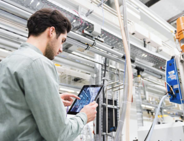

Hello!
Куб Технологий – IT компания, основанная выпускниками и сотрудниками Университета ИТМО в Санкт-Петербурге в 2011 году.
Основные направления деятельности
- Автоматизация бизнес-процессов
- Разработка программного обеспечения
- Аудит, модернизация и сопровождение IT-инфраструктуры
Штаб-квартира находится в Санкт-Петербурге, в здании Технопарка Университета ИТМО (Биржевая линия, 14).
Что
Что такое бизнес-процесс?
Практически каждый внутренний процесс вашей компании – это бизнес-процесс.
А мы уверены, что любой бизнес-процесс можно и нужно автоматизировать,
и мы успешно занимаемся этим
уже почти 10 лет.

Производство
Корпоративные коммуникации

Управление компанией
Бухгалтерия
Продажи
Зачем
Зачем автоматизировать бизнес-процессы?
Автоматизация бизнес-процессов компании обеспечивает финансовый рост компании.
Всё просто!
Всё просто!
Автоматизация - это основной инструмент для оптимизации деятельности компании.
Оптимизация - это основной инструмент для обеспечения роста финансовых показателей.
Оперативность принятия
управленческих решений
Динамичность современной бизнес-среды требует оперативного принятия взвешенных решений. Автоматизация управленческого учета предоставит все необходимые для этого инструменты и обеспечит руководителей возможностью видеть то, что они раньше не замечали.

Анализ и корректировка
работы предприятия
Возможность получать актуальные и достоверные данные
о деятельности сотрудников при помощи автоматизированной информационной системы позволит оперативно выявлять слабые и сильные стороны деятельности компании, а также быстро и четко реагировать на ухудшение производительности как всего предприятия, так и отдельно взятого отдела
или подразделения.

Сокращение количества
ручной работы
Автоматизация деятельности отделов, значительная часть работы которых состоит из рутинных, монотонных задач, которые обрабатываются вручную, позволит снизить нагрузку на ключевых сотрудников, сократить переплаты
по переработкам и исключить ошибки в работе.
Сокращение времени, потраченного на рутинные процессы,
а также значительное сокращение риска человеческого фактора – основные шаги на пути к оптимизации вашего бизнеса.

Моментальный доступ
к информации
Любая рабочая информация должна быть актуальной и должна быть доведена до соответствующего сотрудника своевременно. Автоматизация документооборота и корпоративных коммуникаций обеспечит вас простым и быстрым доступом
к любой необходимой информации.
Как
Как Куб Технологий автоматизирует бизнес-процессы?
Наш основной принцип – это максимальная адаптация под специфику работы вашей компании.
Алгоритм нашего взаимодействия с заказчиками довольно прост.
Алгоритм нашего взаимодействия с заказчиками довольно прост.
-
Мы с вами знакомимся
-
Мы проводим аудит ваших бизнес-процессов. Это – самый важный этап нашего взаимодействия, потому что качественный и всесторонний анализ текущей деятельности организации позволит спроектировать максимально адаптированное программное решение для автоматизации ключевых бизнес-процессов. Еще одно важное качество этого этапа заключается в том, что для вас он – бесплатный.
-
По результатам проведенного анализа мы строим модели ваших бизнес-процессов, после чего подвергаем их критическому анализу и выстраиваем план оптимизации.
-
Теперь, имея все необходимые исходные данные, мы проектируем, разрабатываем и внедряем программное решение, обеспечивающее автоматизацию соответствующих бизнес-процессов.
-
Все вместе убеждаемся, что теперь все отлично!